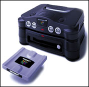

Up to this point, the N64 Introductory Manual has focused on explaining 3D basics and the functions that need to be understood for the creation of N64 applications. Part 4 of the manual covers the N64 expansion device known as the N64 Disk Drive (the 64DD). It is meant to provide a simple explanation of the features of the 64DD and the items which should be noted when developing 64DD applications.
The 64DD enables the creation of games far larger than anything possible with ROM cartridges to date. It also makes it possible to write large volumes of data to the 64DD disk by securing a region of the disk for the storage of user data.
This part of the manual is designed to help you understand 64DD so you can smoothly move to the development of 64DD-compatible software.
This manual is intended for experienced C programmers who are new to N64 game development. After reviewing this manual, you will have an easier time delving into the details provided in the N64 Programming Manual and the N64 Function Reference Manual.
Nintendo® Confidential
Copyright © 1999
Nintendo of America Inc. All Rights Reserved
Nintendo and N64 are registered trademarks of Nintendo
Last Updated March, 1999